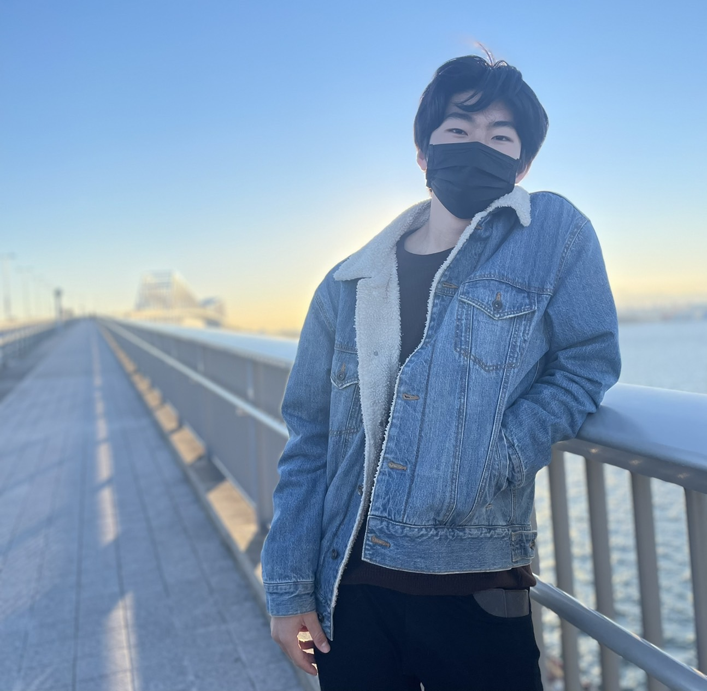
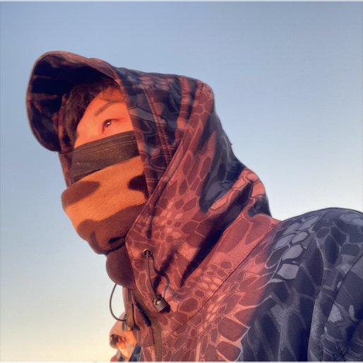

なぜPOSSE②を選んだのですか？
ライター
POSSEに入る前から何かを立ち上げること自体に興味を持っていたからです。偶然自分にそのチャンスが回ってきたので迷わずPOSSE②に行くと決めました.

たいき
POSSE2の実際の雰囲気を教えてください！
ライター
一人ひとりの個性を全員が尊重する関係性で、ありのままの自分でみんなと接することができてとても過ごしやすいです！
かしけん
POSSE2で一番印象に残ってる出来事はなんですか？
ライター
新入生の初めてのチーツ活動である新人ハッカソンの運営に携わったことです。最上期生であるため、先輩からのサポートなしでイベントを1から作り上げた経験はかなり印象深く残っています.
かしけん
POSSE2のいいところはズバリなんだと思いますか？
ライター
教え、教えられる文化があることです。期生が違っていてもお互いに助け合う精神があって、一方的な関係でない点です.
ともあき
ありがとうございました！POSSE②の魅力がとても伝わってきました！
ライター